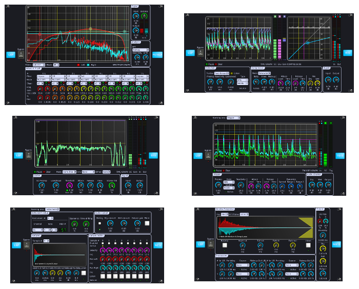

LSP plugins version 1.1.0 released. Farewell to GTK!

Vladimir Sadovnikov has just released version 1.1.0 of his audio plugin suite, LSP plugins. All LSP plugins are available in LADSPA, LV2, LinuxVST and standalone JACK formats.
This release sees a complete rewrite of the GUI toolkit. All plugins have now moved from GTK to X11 + Cairo. There is also newly added support for various DAW's.
The long changelog is as follows
- Ported all widgets from GTK+ 2.x to raw X11 + cairo
- Ardour DAW is supported by the UI as before
- Mixbus DAW is supported by the UI as before
- JUCE-based hosts are now supported by UI
- Tracktion DAWs are now supported by UI
- Renoise DAW is now supported by UI
- Bitwig Studio DAW is now supported by UI
- REAPER native linux version is now supported by UI
- Updated JACK plugin wrapper to support new UIs
- Updated VST pluign wrapper to support new UIs
- Updated LV2 plugin wrapper to support new UIs
- Implemented LV2:Instance support feature for optimizing LV2 DSP <-> UI transfers
- Official Steinberg VST 2.4 SDK is not required more for building VST plugins
- Added version check for JACK core libraries to prevent multiple installations conflict
- Requirements of naming JACK core library were reduced to only contain 'lsp-plugins' substring
- Added version check for VST core libraries to prevent multiple installations conflict
- Requirements of naming VST core library were reduced to only contain 'lsp-plugins' substring
- Ported Gtk2Box widget to X11UI widgets
- Ported Gtk2Button widget to X11UI widgets
- Ported Gtk2Cell widget to X11UI widgets
- Ported Gtk2Grid widget to X11UI widgets
- Ported Gtk2Indicator widget to X11UI widgets
- Ported Gtk2Label widget to X11UI widgets
- Ported Gtk2Led widget to X11UI widgets
- Ported Gtk2Separator widget to X11UI widgets
- Ported Gtk2Switch widget to X11UI widgets
- Ported Gtk2Knob widget to X11UI widgets
- Ported Gtk2Meter widget to X11UI widgets
- Ported Gtk2Group widget to X11UI widgets
- Ported Gtk2Align widget to X11UI widgets
- Ported Center widget to X11UI widgets
- Ported Axis widget to X11UI widgets
- Ported Marker widget to X11UI widgets
- Ported Basis widget to X11UI widgets
- Ported PortAlias widget to X11UI widgets
- Ported Text widget to X11UI widgets
- Ported Mesh widget to X11UI widgets
- Ported Dot widget to X11UI widgets
- Ported IGraph widget to X11UI widgets
- Ported Gtk2Graph widget to X11UI widgets
- Ported Gtk2ComboBox widget to X11UI widgets
- Ported Gtk2Window widget to X11UI widgets
- Ported Gtk2File widget to X11UI widgets
- Ported Gtk2Body widget to X11UI widgets
- Ported Gtk2MountStud widget to X11UI widgets
- Implemented ScrollBar widget
- Implemented Edit widget
- Implemented ListBox widget
- Implemented Menu widget
- Implemented File Save/Open dialog
- Implemented Hyperlink widget
- Implemented Fader widget
- Implemented File saving widget
- Implemented basic clipboard support
- Code clean up and project tree refactoring
- Fixed inline display drawing issue related to GCC 6 optimization specifics (thanks to Robin Gareus)
- Changed maximum sample length of the Schlagzeug plugin up to 64 seconds
- Changed maximum sample length of the Triggersensor plugin up to 64 seconds
LSP plugins use a donate system to open up the source code for individual plugins within the suite. You can follow the progress of this on the projects download page. Published LSP source code can be found at sourceforge.
If you appreciate Vladimir's work, you can make donations over at his bountysource page.